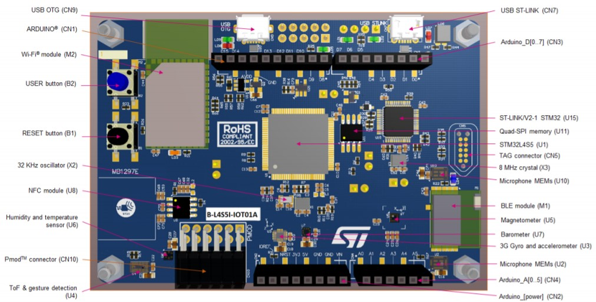

Contents
The goal of this lab is to learn:
- How to setup the Mbed programming environments
- Familiar with the STMicroelectronics Discovery kit for IoT node (B-L4S5I-IOT01A board)
1 Lab Due
Feb. 23, 2022
2 Lab Introduction
With the STMicroelectronics Discovery kit for IoT node, users develop applications with direct connection to cloud servers. The Discovery kit enables a wide diversity of applications by exploiting low-power communication, multiway sensing and Arm® Cortex®-M4 core-based STM32L4+ Series features. The support for ARDUINO® Uno V3 and Pmod™ connectivity provides unlimited expansion capabilities with a large choice of specialized add-on boards.
3 Equipment List
- B-L4S5I-IOT01A * 1
4 Lab Description
4.1 Lecture Notes
- Introduction to Course Course_Intro.pdf
- Chapter 1: Embedded Systems and Microcontrollers ch1_intro.pdf
- Chapter 2: Introducing STM32L4 and mbed ch2_STM32L4.pdf
4.2 Reference Website
Please find details in the following website:
4.3 Revision Control with Git
4.3.1 Sign Up github.com and Create a Remote Repository
To start, you will need a git remote repository account. We recommend you to use GitHub.
- Fill the sign up form and click on Sign up for GitHub. screenshot
- Verify that you are not robot and click on Join a free plan. screenshot
- Scroll down and click on Skip this step. screenshot
- After above steps, you will see screenshot.
- Check your email inbox and click on Verify email address link. screenshot
Create a remote repository.
Go to GitHub and click on New button on the left of the website. screenshot
Fill the repository name (e.g., mbed01), choose the repository to be private, and then click on Create repository.
Click "Code" (a green button) and select "SSH" (under Clone). The repository link will show for copying. Copy the remote repository link <URL>: git:@gitserver.com/<username>/<repo-name>.git.
For example, git@github.com:ee2405/mbed01.git
{kind=link}
{kind=link}
{kind=link}
{kind=link}
{kind=link}
{kind=link}
4.3.2 Add Course GitHub as a Collaborator
- Click "Settings" at top menu under your repo.
- Click "Collaborators" and "Add people"
- Please add "ee2405" to your collaborator, so TAs can check your git repo.
4.4 Setup Host Programming Tools
4.4.1 Install Visual Studio Code
Visual Studio Code is a lightweight but powerful source code editor which runs on your desktop and is available for Windows, macOS and Linux. It comes with built-in support for JavaScript, TypeScript and Node.js and has a rich ecosystem of extensions for other languages (such as C++, C#, Java, Python, PHP, Go) and runtimes (such as .NET and Unity).
VS Code tutorial can be found at https://code.visualstudio.com/docs/.
Download and install VS Code
Run the VS Code, and install the C/C++ and Python extensions. (Done only once per installation)
- Start VS Code
- Click the Extensions icon (Screenshot) in the Activity Bar on the side of VS Code to bring up the Extensions view.
- Type C/C++ to search the extension which publisher name is Microsoft and click the green icon to install.
- Type Python to search the extension which publisher name is Microsoft and click the green icon to install.
- Quit VS Code when done.
{kind=link}
4.4.2 Install C/C++ Compiler
For Windows, please follow https://code.visualstudio.com/docs/cpp/config-mingw We will also install MSYS2 environment (a Unix port) and use it as our main terminal application in Windows.
For MAC OS, please follow https://code.visualstudio.com/docs/cpp/config-clang-mac
Please create a folder "ee2405" under your home directory. This will be your main course directory for host programming projects. Please create "helloworld_cpp" directory under "ee2405" (instead of using "project" folder in above tutorial). And the commands are:
Please start a Terminal app.
$ cd ~
$ mkdir ee2405
$ cd ee2405
$ mkdir helloworld_cpp
$ cd helloworld_cpp
$ code .
Please follow all steps until "Step through the code".
4.4.3 Git in VS Code
- From menu, select SCM under View.
- Click the "Publish to GitHub". Select "Publish to GitHub private repository ee2405/helloworld_cpp". For the first github publish, VS Code will direct to your default browser and ask your permission to access github.com. After setting permission correctly in github.com, you will be prompted a file selection for pushing to the repo. Please select source codes and VS code setup files. After confirmation, you should see selected files in the repo.
4.4.4 Programming with Python
Please follow instructions on how to install and run Python3: https://code.visualstudio.com/docs/python/python-tutorial Please create "helloworld_py" directory under "ee2405".
Please start a Terminal app.
$ cd ~
$ cd ee2405
$ mkdir helloworld_py
$ cd helloworld_py
$ code .
- From menu, select SCM under View.
- Click the "Publish to GitHub". Select "Publish to GitHub private repository ee2405/helloworld_py". After setting permission correcly in github.com, you will be prompted a file selection for pushing to the repo. Please select source codes and VS code setup files. After confirmation, you should see selected files in the repo.
4.5 Programming with mbed Studio
4.5.1 Install Git Desktop Tools
Follow instructions to install Git for your OS:
https://git-scm.com/book/en/v2/Getting-Started-Installing-Git
Open a terminal app. In Windows, please use "Git Bash" just installed by git Desktop. In Mac OS, you search and can use terminal app.
Verify the installation and the version by running:
$ git --versionSet git configuration values.
$ git config --global user.name "your name"$ git config --global user.email "your email"Every Git commit will use the above information after these configurations.
4.5.2 Setup SSH Key
Follow instructions to setup SSH key
Open a terminal app. In Windows, please use "Git Bash" just installed by git Desktop. In Mac OS, you can search and use the terminal app.
Paste the text below, substituting in your GitHub email address.
$ ssh-keygen -t ed25519 -C "your_email@example.com"This will generate a public/private key pair for you. You will copy the public key to GitHub to enable your PC to link to GitHub.
When you're prompted to "Enter a file in which to save the key," press Enter. This accepts the default file location.
> Enter a file in which to save the key (/Users/you/.ssh/id_algorithm): [Press enter]
At the prompt, type a secure passphrase (this is your password to use the private key). For more information, see "Working with SSH key passphrases."
> Enter passphrase (empty for no passphrase): [Type a passphrase] > Enter same passphrase again: [Type passphrase again]
Adding your SSH key to the ssh-agent
Start the ssh-agent in the background.
$ eval "$(ssh-agent -s)"> Agent pid 59566
Add your SSH private key to the ssh-agent.
$ ssh-add ~/.ssh/id_ed25519Add the SSH key to your account on GitHub. For more information, see "Adding a new SSH key to your GitHub account."
For MAC OS, please modify also ~/.ssh/config to include the following contents:
$ code -add ~/.ssh/configHost * AddKeysToAgent yes UseKeychain yes IdentityFile ~/.ssh/id_ed25519
4.5.3 Install mbed Studio
- Create an account at mbed.com: https://os.mbed.com/account/login/
- Download and install mbed Studio from https://os.mbed.com/studio/
4.5.4 Create and Compile a mbed progrem
Follow instructions to create and compile a mbed program: https://os.mbed.com/docs/mbed-studio/current/create-import/index.html
Note that mbed Studio automatically creates ~/MbedPrograms folder to store all mbed programs. You may change it by File --> Open Workspace.....
Mbed Studio automatically uses your user folder for ~/MbedPrograms. However, if your user folder uses Chinese characters (e.g., your user name), mbed Studio will not compile in the following. In such case, please create another folder and make sure the path names are without Chinese characters. Then you can use this new folder as the mbed Workspace by selecting File --> Open Workspace..... This only has to be done for once. All following mbed programs will be created under the new folder.
Open the File menu and select New Program....
Select mbed-os-example-blinky under MBED OS 6 Enter mbed01 for Program name. Check "Make this the active program" (default). Under "Mbed OS Location", check "Store Mbed OS in the program folder (+1GB)" Click "Add Program".
The mbed-os-example-blinky project will be created. Please double-click on main.cpp to check its contents:
1/* mbed Microcontroller Library 2 * Copyright (c) 2019 ARM Limited 3 * SPDX-License-Identifier: Apache-2.0 4 */ 5 6#include "mbed.h" 7 8// Blinking rate in milliseconds 9#define BLINKING_RATE 500ms 10 11int main() 12{ 13 // Initialise the digital pin LED1 as an output 14 DigitalOut led(LED1); 15 16 while (true) { 17 led = !led; 18 ThisThread::sleep_for(BLINKING_RATE); 19 } 20}
ThisThread::sleep_for() will put the micro-controller into a low-power mode (not doing any computation).
led.write(0) is the same as led=0. It will pull myled pin low.
Note that mbed-os / stores the current Mbed OS. We will reuse this copy of Mbed OS for other labs.
Plugin the B_L4S5I_IOT01A mbed board to your PC.
The board should be automatically recognized as "DISCO-L4S5I (B-L4S5I-IOT01A)
Note: if the RED LED besides the micro USB port keeps blinking, it means you have used a USB power cable. Please change port of the cable or find a cable that support USB signals. You can also verify this that no "DIS_L4S5VI" folder is created by your O.S. like an external flash drive.
Build and running the program
Please follow instructions in https://os.mbed.com/docs/mbed-studio/current/building-running/index.html
Click Run button to build and run the program. It will take a while to build Mbed OS first and then the example blinky program.
In the BUILD/B_L4S5I_IOT01A/ folder, there is a mbed01.bin file which is the compiled program. You can copy the .bin file to DIS_L4S5VI folder to flash the program onto B_L4S5I_IOT01A.
4.5.5 Push source code to github
- Follow instructions to link a mbed program to a github rep: https://os.mbed.com/docs/mbed-studio/current/source-control/index.html
- First we follow instructions in https://os.mbed.com/docs/mbed-studio/current/source-control/index.html#configuring-a-program-for-source-control-and-collaboration
to configure the github for the program:
- Go to the Source Control view.
- Click the Set Remote URL button. The Set Remote URL dialog box opens. Enter a URL for your remote repository, for example: git@github.com:ee2405/mbed01.git.
- Click Set Remote Repository. mbed Studio will ask you to login github to authenticate git operations.
- Push the code to your git remote repository, and check your remote repository for new files.
- Add the main.cpp by clicking "+".
- Enter a commit Message and commit by click "V".
- Push your commit to the remote repository by clicking "..." and select "Push".
- Start the web browser and go to github.com. Check if your main.cpp is uploaded to the remote repository.
- If, for some reason, the above git operations do not work in mbed Studio, you may simply use "Add file" menu --> "Upload files" at the repo. And select files you want to upload to github without mbed Studio or git tools.
4.5.6 Create a second mbed progrem
We will use this example to show a multiple cpp project and also we use the existing Mbed OS from mbed01.
Create a new program.
Open the File menu and select New Program....
Select "empty Mbed OS program" under MBED OS 6 Enter mbed-os-test-program2 for Program name. Check "Make this the active program" (default). Under "Mbed OS Location", check "Link to an existing shared Mbed OS instance" and select "~/Mbed Programs/mbed01/mbed-os/". This will reuse Mbed OS in mbed01/. Click "Add Program".
Add copy the following source code into the main program main.cpp under mbed-os-test-program2.
1#include "mbed.h" 2 3DigitalOut myLED(LED1); 4DigitalOut myLED2(LED3); 5 6void Led(DigitalOut &ledpin); 7 8int main() 9{ 10 myLED = 1; 11 myLED2 = 1; 12 while (true) 13 { 14 Led(myLED); 15 Led(myLED2); 16 } 17}
Add the following source code as another cpp source file led.cpp.
1#include "mbed.h" 2 3void Led(DigitalOut &ledpin) 4{ 5 for (int i = 0; i < 10; ++i) 6 { //blink for 10 times 7 ledpin = !ledpin; // toggle led 8 ThisThread::sleep_for(100ms); 9 } 10}
Compile and test the program
The LED will light green light five times. After that, the blue and orange light will light five times. And the above sequence will repeat until we unplug the board.
4.5.7 Debugging mbed Programs
Pyocd does NOT work with our mbed board currently. Do NOT proceed with your board in this part. There is no demo for this section.
https://os.mbed.com/docs/mbed-studio/current/monitor-debug/index.html
4.5.8 Create a third mbed progrem
We will use this example to show how to use printf for floating points.
Create a new program.
Open the File menu and select New Program....
Select "empty Mbed OS program" under MBED OS 6 Enter mbed-os-test-program3 for Program name. Check "Make this the active program" (default). Under "Mbed OS Location", check "Link to an existing shared Mbed OS instance" and select "~/Mbed Programs/mbed01/mbed-os/".
Add copy the following source code into the main program main.cpp under mbed-os-test-program3.
1/* mbed Microcontroller Library 2 * Copyright (c) 2019 ARM Limited 3 * SPDX-License-Identifier: Apache-2.0 4 */ 5 6#include "mbed.h" 7 8 9// Blinking rate in milliseconds 10#define BLINKING_RATE 1000ms 11 12 13int main() 14{ 15 // Initialise the digital pin LED1 as an output 16 DigitalOut led(LED1); 17 18 for(int i=0; i<10; i++){ 19 led = !led; 20 ThisThread::sleep_for(BLINKING_RATE); 21 printf("%1.5f\n", 3.14159); 22 } 23}
Compile and test the program
The LED will light green light 10 times. And there are printout in the "Output". What are they?
4.5.9 Setup mbed OS
Change the default printf library to "std"
Please find ~/Mbed Programs/mbed01/mbed-os/targets/targets.json in the file browser and click to edit it. Search for "printf_lib", and replace "minimal-printf" with "std"
We will modify the application configuration file to override the parameter printf_lib with the value std (to replace "minimal-printf"). Screenshot The purpose is to support floating point printf.
Please find ~/Mbed Programs/mbed01/mbed-os/platform/mbed_lib.json Search and Set "callback-nontrivial" parameter to true . This will enable a callback feature in task scheduling, which will be used in later labs.
After set above parameters, please compile and test the mbed-os-test-program3 again.
{kind=link}
4.6 Hardware block diagram and Pinout
- The hardware block diagram illustrates the connection between the STM32 and peripherals: embedded ST-LINK, ARDUINO® Uno V3 shields, Pmod™ connector, Quad-SPI Flash memory, USB OTG connectors, digital microphones, various ST-MEMS sensors, and the three RF modules (Wi‑Fi®, Bluetooth®, and NFC): Board Block Diagram
- Board Pinout : Board Pinout
{kind=link}
{kind=link}
4.6.1 Course Example Codes
- You may check course example codes in
https://gitlab.larc-nthu.net/ee2405_2022/code-example.git. We will update the repo regularly for the latest version along with the course. You should be able to find example codes used in labs of this course here. If you clone or download the example, it will be easier to examine and copy codes than from course website.
5 Demo and Checkpoints
- Please fill in a questionnaire at EEClass course website to answer the following items: 1. Name, 2. Student ID, 3. Email, 4. Cell phone, 5. GitHub account, 6. GitHub link
- Create a new project to write for the following function. Please repetitively turn on LED3 "three times" and then LED1 "twice".
- Please submit your lab report to EEClass as a pdf file. The pdf is a record of key lab parts you have done. You may include the following contents (but not limited to): (1) Steps or commands in each part (2) Results of each step (3) Encountered issues (4) Discussion